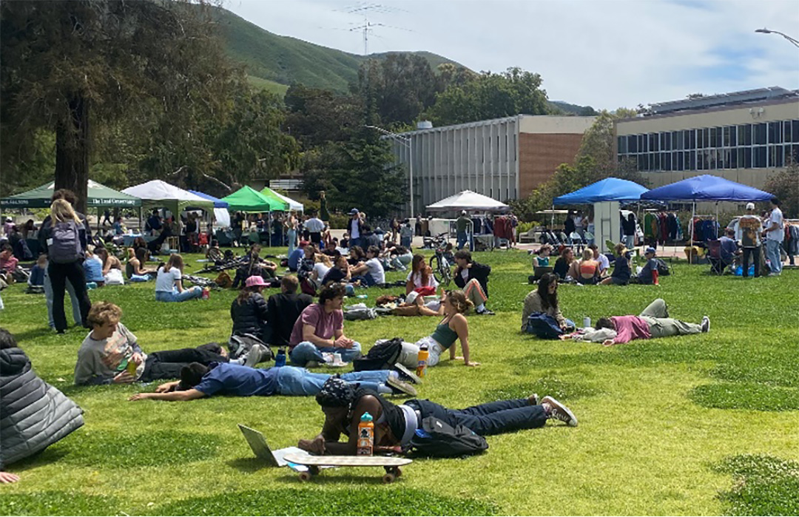

This is fashion that is ethically made and environmentally friendly. This includes fashion that is second hand, hand made, uses ecofriendly materials, and much more.
Why is this important? Sustainably made clothing is going to be high quality and last you years to come. It also requires less resources to create a better product while reducing your carbon footprint and supporting ethical labor. In addition, shopping second hand prevents clothes from ending up in the landfill, creates jobs, and creates something similar to a circular economy as opposed to mass consumption.
Come explore some of San Luis Obispo's shining examples as well as Cal Poly student contributions!
Shop on Campus
Cal Poly Sustainable Fashion Club hosted its first Swap and Shop of the year on April 20th on Dexter Lawn.

![Phoebe Burke, a fourth-year Biological Sciences major, shops for thrifted clothes at one of the many pop-up sales. This is the first year that Cal Poly Sustainable Fashion Club has committed to putting on monthly Swap and Shops in order to create a consistent space for the campus community to come together to donate, exchange, and shop for clothes. “We hope to encourage sustainability and this creates a way for our campus to practice aspects of a circular economy,” says Sarah LaFazia, the social media and communications chair for the Sustainable Fashion Club (not pictured.)](img/8.jpg)
![Allison Philips, a fourth-year Art and Design major, sells her handmade jewelry to students. A key part of the cycle of second-hand shopping is giving back – this means creating homemade jewelry, upcycling clothes, and giving back to thrift stores. Otherwise, second-hand shopping could not be sustainable if it is only purchasing! Often, people will buy cheap, thrifted clothes and resell them online for quadruple the price which takes items out of the cycle for many people who cannot afford the price increase. The Swap and Shop is a great way for people to give back to the cycle to keep it going, instead of removing the accessibility aspect of second-hand shopping.](img/9.jpg)